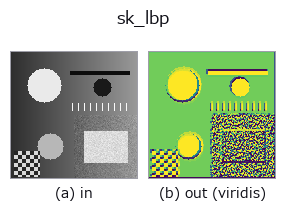

texture op• データ種: image → image
• 呼び出し: fullseye.apply(img, "sk_lbp", a=0.5, b=0.5) (2-D は 1 画像 + 2 スカラつまみ a,b∈[0,1] のモデル)

*図は合成の入力 128×128 で実際に走らせた出力。左が入力、右が出力。点群は上から見た散布(明るさ = z)、1-D 列は折れ線、体積は z 方向の最大値投影、動画は中央フレーム、複素画像は振幅、絵にならない返り値は値そのもの。*
*出力は viridis 風の疑似カラー(暗い紫 = 小、黄 = 大)。距離・位相・向き・深度のような「量の場」を読むため。*
つまみ a を振る(0.1 / 0.5 / 0.9、もう一方は既定):
▸ sk_lbp: knob a sweep (docs site)
*つまみ b は出力を変えない(実測: 0.1 / 0.5 / 0.9 で同一)。*
別の画像でも(合成シーン / 写真 / 硬貨。上段が入力、下段がその出力。つまみは既定):
▸ sk_lbp: other inputs (docs site)
*4 列目はカラー (H,W,3) の入力。この op は色を跨がずに扱える(色チャネルを 3 本目の空間軸として畳み込まない)。*
LBP(Local Binary Pattern、局所二値パターン)。各画素を中心に円周上の近傍画素と大小比較して 2 進コードを作る、照明変化に強いテクスチャ記述子。
HALCON に直接対応するものは無い。実装は `feature.local_binary_pattern(v, 8, 1+int(a*3)) を正規化したもの —— 近傍点数 P=8 は固定、a は半径 R を 1〜4 に振る(半径が大きいほど粗いスケールのテクスチャを拾う)。★b は符号化 method を選ぶ ―― b<0.60 で 'default'(既定。回転不変ではない)、<0.75 で 'ror'、<0.90 で 'uniform'、それ以上で 'nri_uniform'`。
実写のテクスチャで測ると、回転不変な符号化にしても異方な素材は救えない ―― brick / grass / gravel で、回転による自分自身からのずれを素材間の最小距離で割った比は `'default' で 9.64 / 0.17 / 0.19、'uniform' で **1.72** / 0.02 / 0.01。等方な 2 つは 10 倍良くなるのに、brick は 1 を割らない(回した自分より別の素材のほうが近い)。LBP の回転不変性は**局所パターンの巡回**に対するもので、**素材そのものの向きの分布**は消せないため。詳細 = examples/poc_real_texture_invariance.py`。
• gallery2d_texture_freq ファミリ ガイド
• サンプルデータ カタログ(DL URL / ライセンス) — 2-D は skimage.data(BSD/public)+ 合成、3-D は実データ源(Stanford/PDS 等)の DL URL。
• 演算子の来歴・参考文献 — この op 族の元になった研究/手法の出典。
• アルゴリズムの正典(著者・年)と用途は上記ファミリ使い方ガイドに記載。
下のプログラムは実際に走ることを確かめてある(図と同じ入力)。Studio のヘルプではこのブロックがボタンになり、その場で読み込んで実行できる。
sk_lbp 0.50 0.50
▸ Load this pipeline · Load & run
• gallery2d_texture_freq — py -3.11 examples/gallery2d_texture_freq.py
• poc_real_texture_invariance — py -3.11 examples/poc_real_texture_invariance.py
image を入力に取れる)identity · gaussian · mean_box · bilateral · unsharp · median · min_filter · max_filter
texture)std_filter · gabor · sk_frangi · sk_meijering · sk_hessian · sk_gabor · sk_entropy · sk_shape_index
*Provenance: ops.py — 2D operator registry. この per-op ノートは tools/opdocs.py md が自動生成(手編集しない)。*
© 2026 Kazufumi Furuse — Fullseye operator documentation. Licensed under Apache-2.0.
{kind=link}
{kind=link}